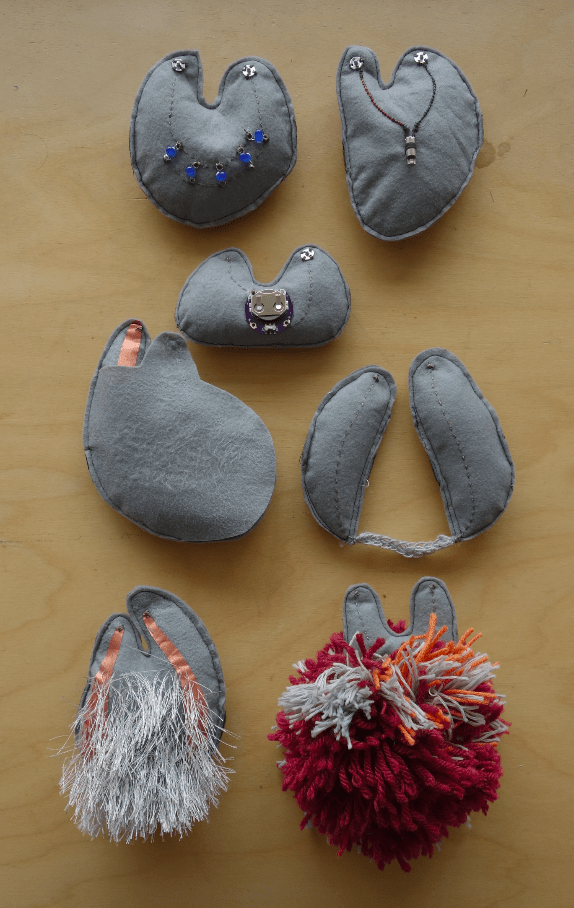

Human Breadboards is an exploration into tangible interfaces for learning computing. As well as exploring methods for design learning, I made a series of interconnecting sensors and actuators that can be used for rapid prototyping interactive design ideas on the body.


The project started through conversations between educators at the etextile summer camp 2015. I was particularly interested in (what I later learned was called) embodied learning, and through the project I started to think about embodied approaches to learning.


The project started by exploring how young people could learn about computing through etextiles, and ended being part of a larger approach to learning about technology through sharing experiences (as wells as through sharing skills).

This grew into my thesis project for my MA in Design at Goldsmiths. It was a small research project, with workshops at Orchard School Bristol and Furtherfield, London.